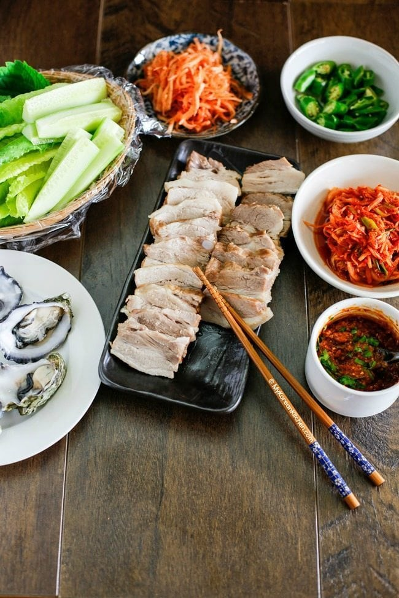

Apple infused Bossam :3

Traditional korean dish with soft boiled pork and Spices.
Ingredients
- 1.1kg of skinless pork belly, rinsed in cold water.
- 1 onion cut into quarters.
- 1 red apple.
- 2 stalks of green onion, root trimmed.
- 5 cloves of garlic skinless.
- 25g of fresh ginger thinly sliced.
- 1 tbsp of black hole pepper.
- 2 tbsp of Doenjang (korean soy bean paste).
- 2 tbsp of soy sauce.
- 4 tbsp of rice wine.
- 8 cups of water.
Side dishes
- Washed lettuce leaves.
- Washed perilla leaves.
- 1 english cucumber, slices in long sticks.
- Washed and sliced green chilli.
- Kimchi salad
- Gochujang
Instructions of preparation
- Put the pork belly, onion, apple, green onion, garlic, ginger, pepper, doenjang, soy sauce, rice wine and water into a large pot. Boil with the lid on medium-high heat for 1 hour until the pork is cooked.
- While the pot is boiling, prepare the side ingredients.
- Take out the meat. Cool it down for about 5 to 10 minutes.
- Thinly slice the pork.
- Place it with the side dishes.
How to eat it
- Grab a lettuce leave.
- Place the sliced pork in it.
- Add sauces and topping to taste.
- Wrap it up.
- Eat it.
Enjoy :)